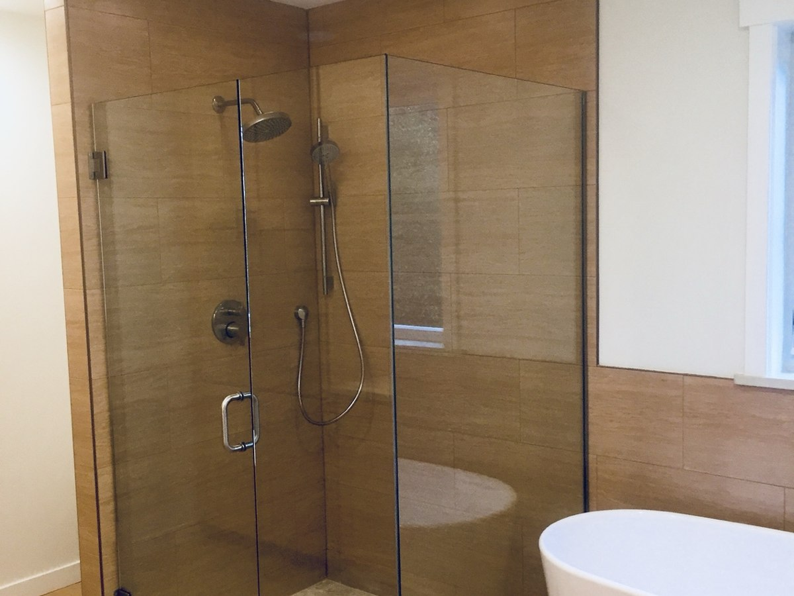
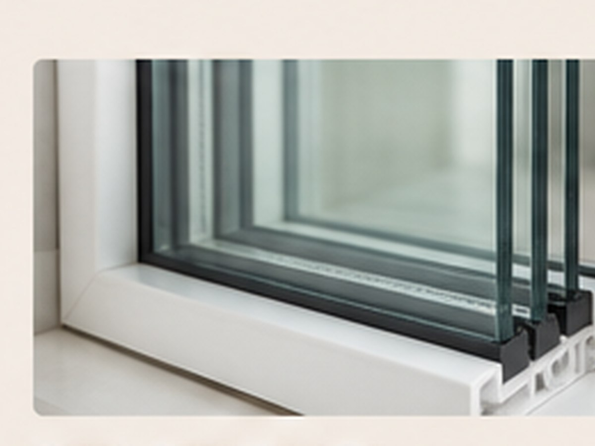

Premium Shower Enclosures
Custom frameless and semi-frameless shower-door systems measured and installed for a refined, durable finish.
Our current work is centered on premium shower enclosures, window retrofits, and replacement glass for homeowners throughout South Whidbey.
Custom frameless and semi-frameless shower-door systems measured and installed for a refined, durable finish.
Replacement-window solutions for homes needing improved performance, updated appearance, or more reliable operation.
Replacement of failed, fogged, cracked, or damaged insulated glass units when the surrounding frame can remain.
Selected mirror, panel, and specialty-glass work depending on the project and installation requirements.
Replace these placeholders with your best shower, window, and glass-project photographs.



Trusted local craftsmanship, premium glasswork, and residential building experience serving Langley, Clinton, Freeland, and Greenbank.